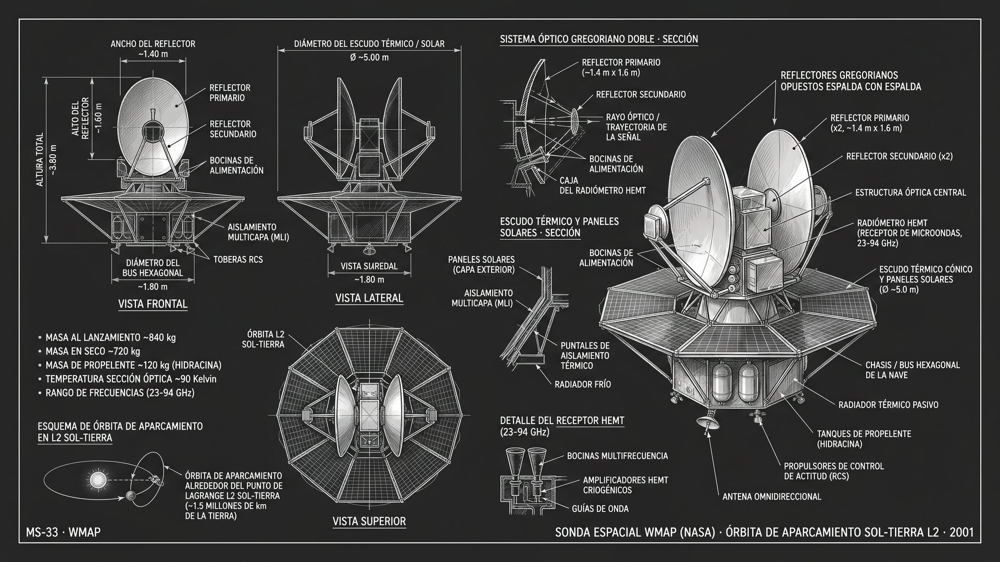

Wilkinson Microwave Anisotropy Probe (WMAP)

Puso fecha al universo: 13.770 millones de años, con solo un 4,6% de átomos normales. Observó desde el punto L2 durante nueve años y se apagó en 2010.
Cerró la toma de datos el 20 de agosto de 2010, tras nueve años midiendo el fondo cósmico de microondas desde L2; el 8 de septiembre de 2010 pasó a una órbita de aparcamiento heliocéntrica. Personas: Charles L. Bennett, Gary Hinshaw, David T. Wilkinson
Lo que hizo
- Mi encargo — Medir el fondo cósmico de microondas para sacar de ahí los parámetros del universo, su edad y su composición. Se propuso en 1995, se aprobó en 1996 y me lanzaron el 30 de junio de 2001 con el nombre de MAP.
- Estación en L2 — Fui la primera nave que usó el punto L2 Tierra-Sol como plataforma de observación, a 1,5 millones de kilómetros de la Tierra y siempre de espaldas al Sol y a la Tierra.
- El apagado — El 20 de agosto de 2010 tomé el último dato científico y el 8 de septiembre encendí los propulsores para salir de L2. Quedé en una órbita de aparcamiento alrededor del Sol.
Modelo 3D, chat y cómic, en tres idiomas
Fuentes
- science.nasa.gov/mission/wmap/wmap-overview/
- www.nasa.gov/centers-and-facilities/goddard/nasas-wmap-project-completes-satellite-operations/
- nssdc.gsfc.nasa.gov/nmc/spacecraft/display.action?id=2001-027A
Ver el índice completo · Proyecto del NASA Space Apps Challenge 2026. Contenido con fuentes citadas.